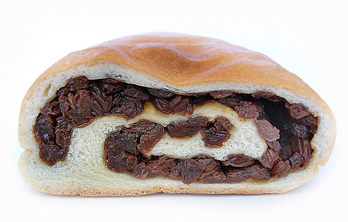
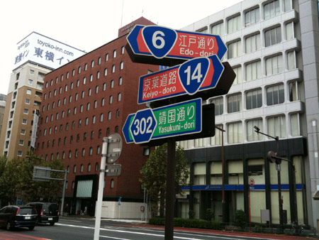
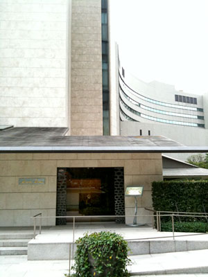
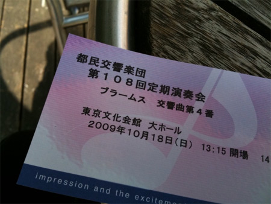
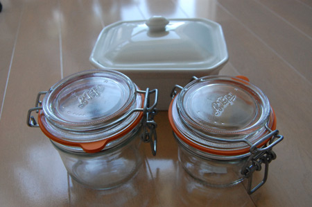
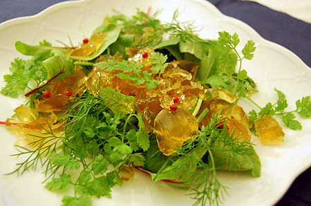
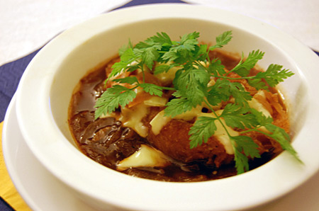
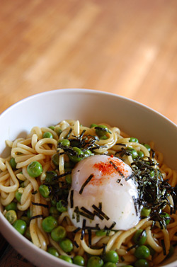
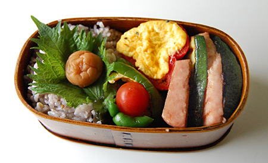

2009年10月 の記事
-
すごいパン
ボワブローニュのパン。 天然酵母の生地もムチムチしていて美味しいのだけど、特筆すべきはこの！レーズン！ パン食べてんだかレーズン食べてんだかわかんないとゆーボリューム！ しかもこのレーズンがんまいの！…

-
銀座ポタリング
折りたたみ自転車を購入したので、足慣らしにポタリング。 九州にいたときは、自転車に乗る…というとサイクリング！って感じだったけど、 こっちはポタリング。だるーく街をまわってみますね。 6号線、14号…

-
voie lactee
神谷町にあるvoie lacteeに行ってきました。 こちらは現代陶芸コレクターの菊池智氏の美術館に併設されたレストランです。 最近、雑誌、テレビでも紹介されているので有名になりつつありますがー……

-
都民交響楽団 定期演奏会
twitterでも実況しましたが… 都民交響楽団の定期演奏会に行ってきました。 事前に往復はがきで申し込みをすれば無料！ 東京文化会館は音響もいいのでおすすめです（あくまでも私感ですがｗ）。 中学、高…

-
iphone 3GSを飼いました
どういうわけか、長らくiphoneに見向きもしていなかったのだけど、 セカイカメラの発表で「あ！ほしい！」って思っちゃいました。えへ。 会社に端末があるので、しばらくいじくり倒させていただいてから、…
-
フォアグラテリーヌ レシピ
瓶詰めフォアグラのレシピがあんまり無いので覚え書きとして記録。 使うのは手前のパッキン付きガラス瓶。 フランスの老舗ガラス器メーカー、ル・パルフェのガラス瓶（テリーヌジャー）です。 合羽橋で半額で購…

-
二日目フレンチ
カレーは二日目が美味しいけど フレンチはどうなのかしらね。 とにもかくにも、食材が余っているので二日目フレンチ。 ハーブのサラダ。コラーゲン仕立てごまだれドレッシング←ちょっとレシピが怪しくなって…

-
フレンチ！フレンチ！フレンチ！
むしょうにフレンチ。 まー連休で多少時間に余裕があるしね。 オニオングラタンスープ 百薬たまごとトマトのサラダ。コンソメジュレ。 洋なしとフォアグラソテーバルサミコソース仕立て マグレ鴨…

-
かっぱに会う日
二日酔いの夕方ー。 散歩してたらかっぱに出会った。酒とかっぱって相性いいよなーとか思ったりして。 カップルカッパなのかなー。 二日酔いでふーらふらしてるもんだから写真のシャッターが切れなくて、 も…

-
調味料バトン
-
タテイチ
貯め込んでいたタテイチ写真ですー。 ピンクリボンキャンペーンで桃色に灯るトーキョータワー 月も明るく灯ってる夜。＠六本木ヒルズ あたま出ちゃってるよ！と心配にならざるをえないキャラクタ アンパン…

-
ヨコイチ
貯め込んでいたヨコイチ写真です 十五夜と立派なうんち＠隅田川 今年はオランダ年＠東京駅 御輿の津波に襲われた＠サンモール ケーバでバケン＠wins 都会のオアシスって意外と多いね。お…

-
かいーの
かいーの すっごくかいーーの

-
レシピのない料理

-
曲げ輪っぱ弁当シリーズ
